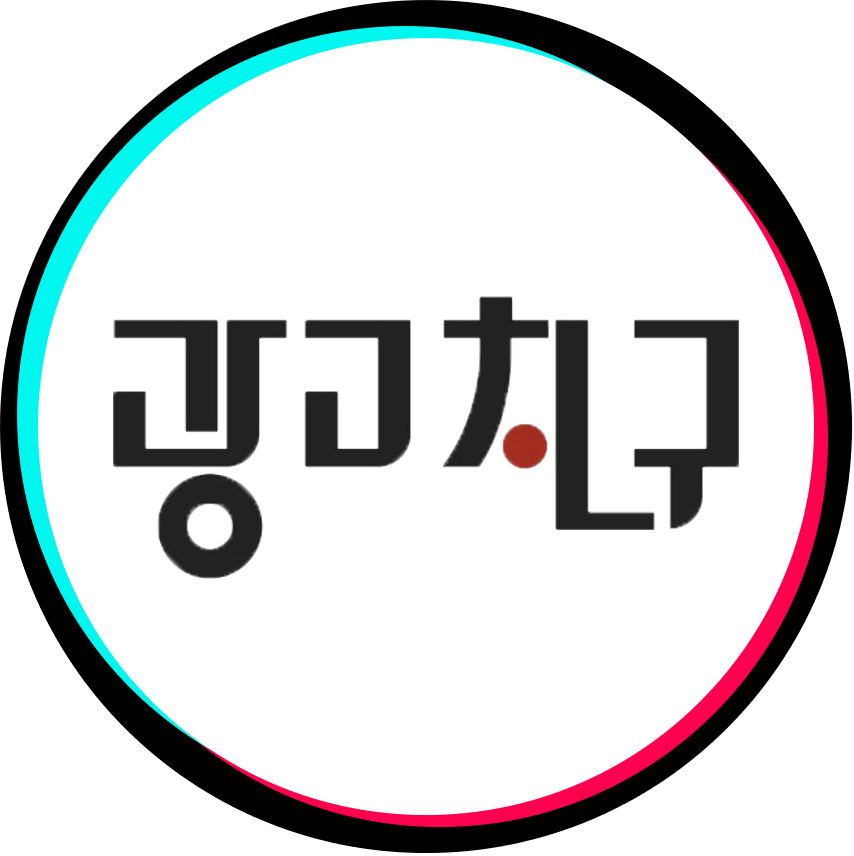
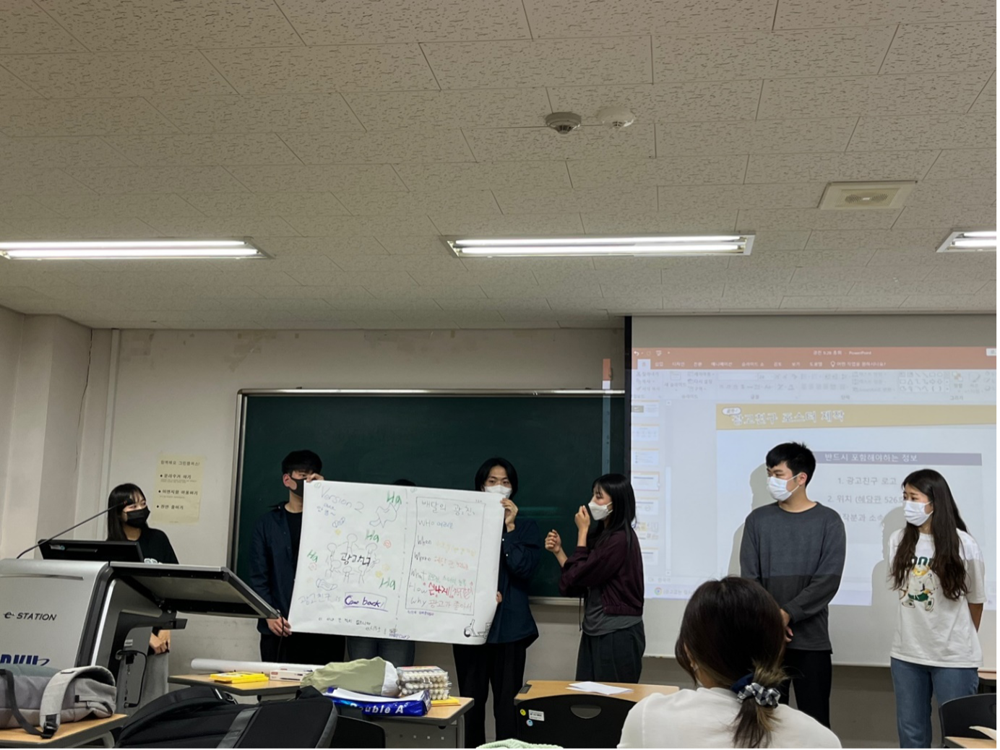
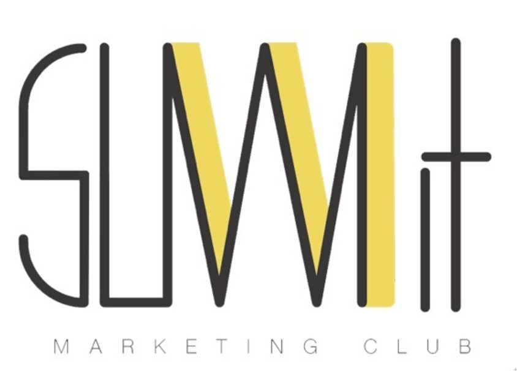
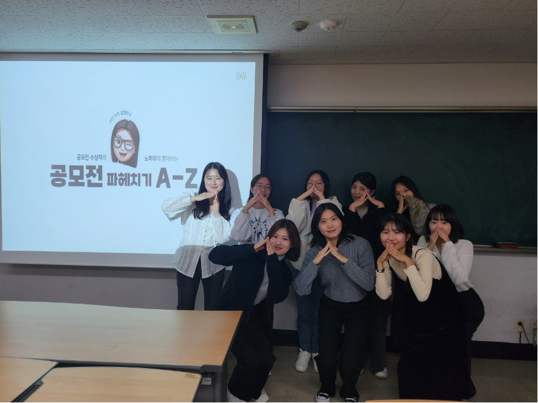

미래의 마케터를 꿈꾸는 어스인
▶ 광고친구 ◀


Since 1991. 30년 이상의 역사가 함께하는 단국대학교 문예창작분과 중앙동아리 광고친구입니다.
저희는 광고와 마케팅에 대하여 간략하면서도 재밌게! 친구처럼 알아가보자는 의의가 담긴 동아리입니다.
광고친구에서는 주 1회의 총회를 통하여 광고와 마케팅에 대한 기본적인 지식을 접하고 간단하게 체험해보는 활동을 할 수 있습니다✨️
또한 저희 동아리는 긴 역사가 있는 만큼 다양한 직무를 지니신 선배님들이 계십니다! 그렇기에 광고친구는 여러 분야의 경영, 마케팅 선배님들의 특강 등 현직자 선배님과 관련된 여러 경험을 제공해드리고 있습니다💓
끝으로 저희는 동아리 내부에서 팀을 짜서 교외, 교내 공모전 및 대외활동에 지원해보기도 합니다😚
광고와 마케팅에 대해 쉽고 재밌게 접해보고 싶으신 분!
광고와 마케팅에 관련된 간략한 스펙을 가지고 싶으신 분!
현직자와의 멘토링이 필요하신 분!
고민말고 고! 광고친구에 많은 관심 부탁드려요🤍
▶ SUMMIT ◀
 